Back to Nakanai '93 Contents Page
Back to Nakanai '93 Contents
Page
 | Beccari's Ground Dove, Gallicolumba beccarii. |
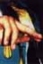 | Immature Black-Headed Paradise Kingfisher, Tanysiptera nigriceps. |
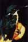 | Bismarcks Kingfisher, Ceyx websteri |
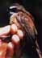 | Bismarcs rufous fantail, Rhipidura dahli |
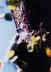 | Blue-Eyed Cockatoos, Cacatua opthalmica, at their nest-hole. |
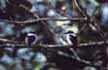 | White Mantled, or New Britain, Kingfishers, Halcyon albonata. |
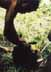 | Hunting is a small threat to the Hornbill when compared with forest clearance |
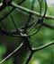 | Bismarck Flowerpecker, Dicaeum eximium |
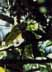 | New Britain Friarbird, Philemon cockerelli |
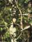 | New Briatin Grey-Headed Goshawk, Accipter princeps |
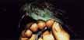 | Ashey Honeyeater, Myzomela cineracea, a very common forest bird. |
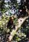 | Male Blyth's Hornbill, Aceros plicatus. |
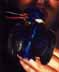 | Dwarf Kingfisher, Ceyx lepidus. (And James!). |
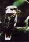 | A day in Cairns provided more phot opportunities than our entire time in PNG. Laughing Kookaburra. |
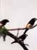 | Buff-bellied Mannikins, Lonchura melaena. |
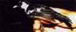 | Bismarck Pied Monarch, Monarcha verticalis. |
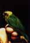 | Buff-face Pygmy Parrot, Micropsitta pusio. |
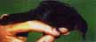 | Rufous-faced thicket-warbler, Megalurus rubiginosa. |
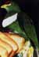 | White-bibbed fruit dove, Ptilltnopus rivoli. |